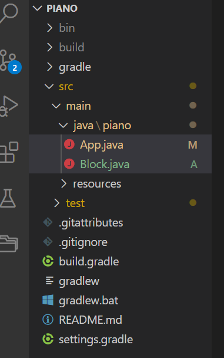
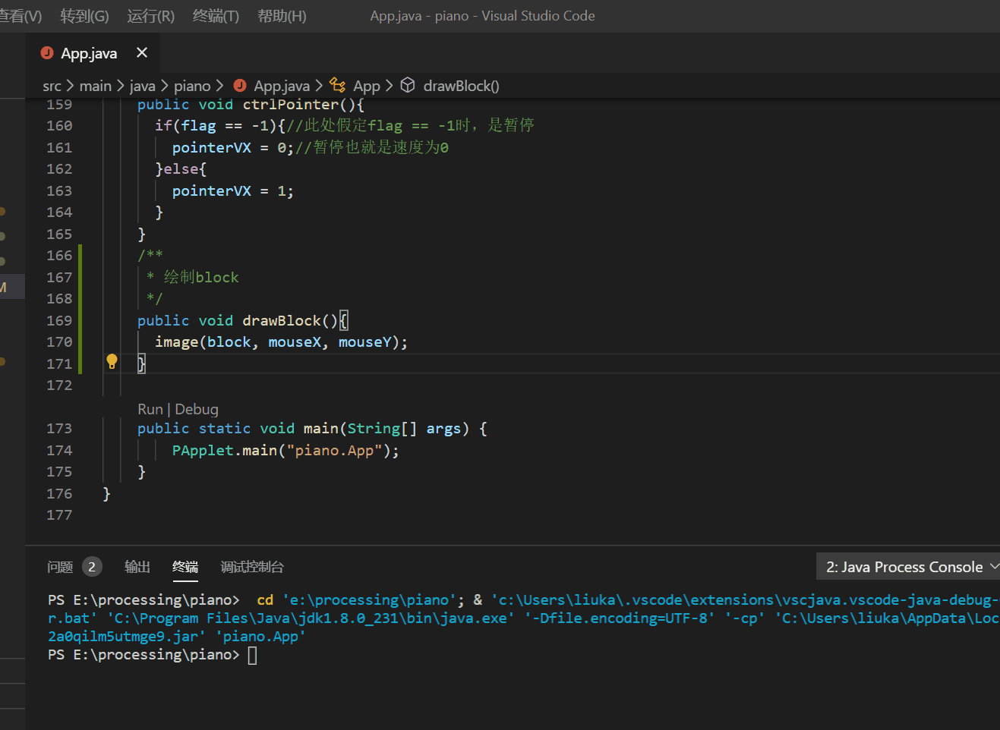
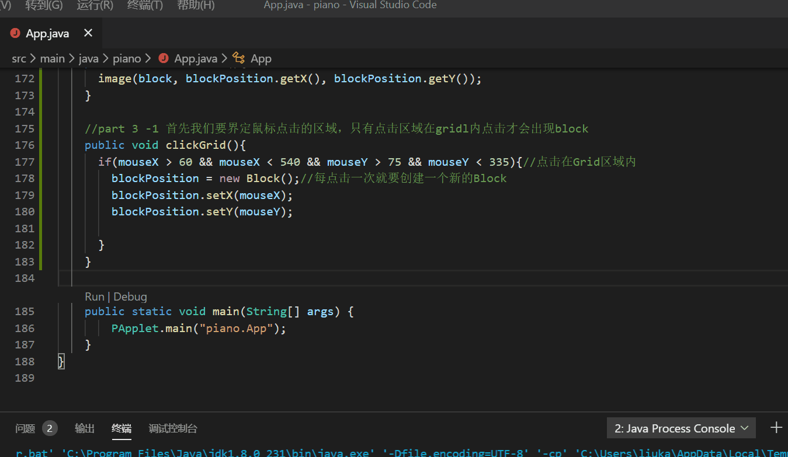
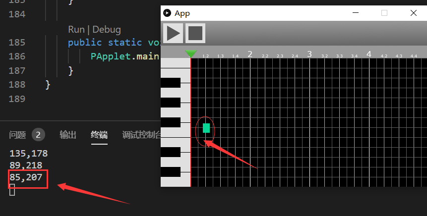
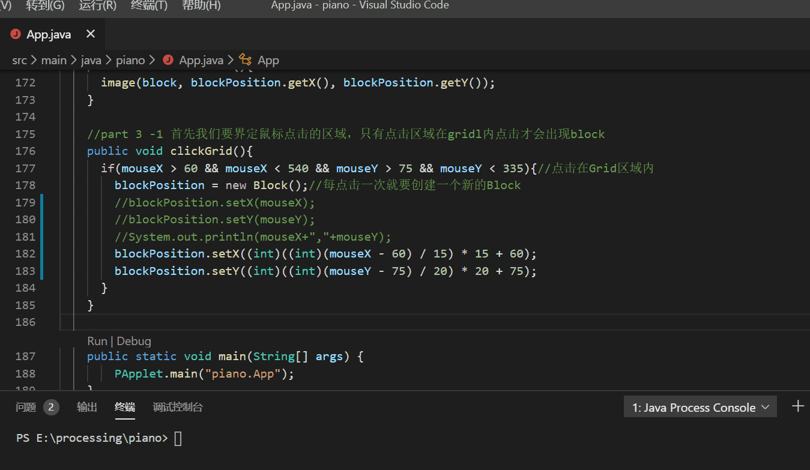
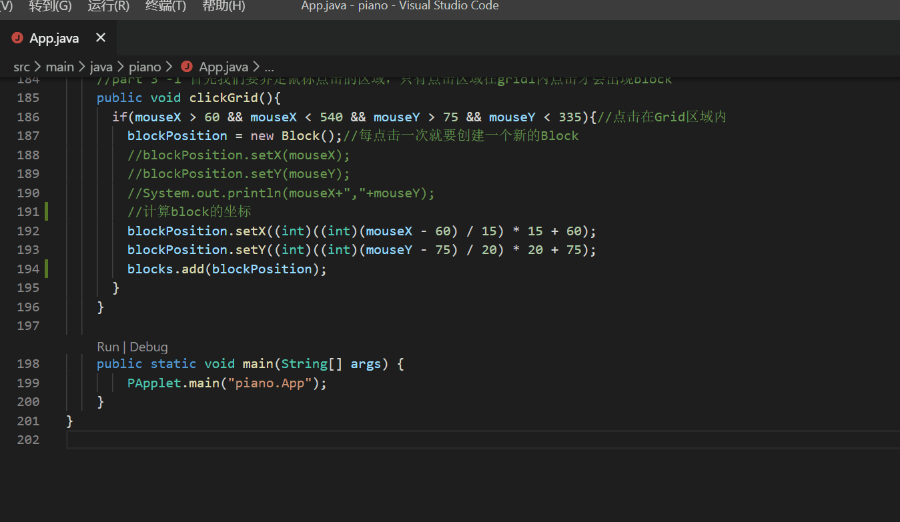
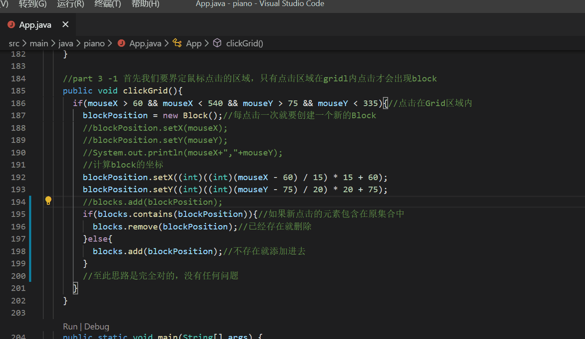

processing基础8---综合运用-part3
这是承接基础7的综合运用第三步也就是part3
这一部分要实现的是点亮方块和取消，大体步骤如下
- 实现绘制方块(block)
- 实现在指定位置绘制方块(block)
- 实现在指定表格(grid)绘制方块(block)
- 实现再次点击block，block消失
经过前几章的学习，步骤1、2应该很简单，就是在鼠标的点击出绘制block，比价麻烦的是block要正好覆盖一个grid,而不是覆盖两个半个grid，我把问题的解决着重放在后面两步
由前面的学习，我们知道，绘制图片，其实需要的只是图片左上那个点的起始坐标，于是为了简化问题，我把block抽象成一个对象block,
属性就只有x,y坐标，x,y都为整数，因为grid每个顶点的坐标都是整数，不存在小数，block.java代码如下
1 | package piano; |
项目结构如下

错误演示1如下：
1 | /** |

我们直接将鼠标的坐标赋给block图片
错误演示2，如下
1 | /** |
这么写思路是正确的，但是效果并不对

最开始左上角有一个block，我们明明是每点一次就创建一个新的block,为什么只显示一个block的，无论我们点得有多快都只显示我们最新点击的那个地方的block，我们要达到的效果是每点一次，就创建一个block并绘制一个，并且所有的block都显示在屏幕上，还有我们现在写的代码，block并不是正好覆盖一个方格，这一点也要修改。
问题我们一个一个来解决，解决问题应该从简单的开始，把所有复杂的问题都分解成若干个简单的问题，然后逐个击破。
我们先画出一个block在覆盖方格
问题的关键是计算通过鼠标的点击坐标计算出block的坐标
然后将block的坐标转换成grid每个方格的左上角的坐标
沿着这个思路，我们只需要找到鼠标落点最近的方格的左上顶点坐标就够了
grid的宽高是block宽高的整数倍，因此我们用鼠标落点坐标mouseX和mouseY对block的宽高整除，然后取整就可以得到mouseX，mouseY最近的方格的点的坐标
可以用如下的公式
(int)((int)(mouseX - 60) / 15) * 15 + 60
为什么是这样的我们以一个点为例，就可以推导出所有的了
首先打印出mouseX和mouseY

我们以这个点为例子，这个点的坐标是（85,207）,
上面减去的60是左边琴键的宽度(85-60)/15 = 1，1*15也就是刚好一个方格的宽度，由于这里对精度要求不高，这种取整近似计算足够了，下面的y坐标的计算也同理，就不赘述了
(int)((int)(mouseY - 75) / 20) * 20 + 75
block的坐标计算方法已经完成，修改后的代码如下
1
2
3
4
5
6
7
8
9
10public void clickGrid(){
if(mouseX > 60 && mouseX < 540 && mouseY > 75 && mouseY < 335){//点击在Grid区域内
blockPosition = new Block();//每点击一次就要创建一个新的Block
//blockPosition.setX(mouseX);
//blockPosition.setY(mouseY);
//System.out.println(mouseX+","+mouseY);
blockPosition.setX((int)((int)(mouseX - 60) / 15) * 15 + 60);
blockPosition.setY((int)((int)(mouseY - 75) / 20) * 20 + 75);
}
}验证一下：已经达到了我们要的效果

画多个block
我们只能画一个block是因为我们不了解processing的工作原理，于是我查询了很多资料和官方文档
知道了draw()方法里的绘画代码会无限循环地执行下去，这个在前面的动画章节也提到过，这个很重要的
然后说到动画大家都知道帧率，动画和ppt的区别就在这个地方，draw()里的代码，每一帧都会重新绘制，覆盖掉先前的数据，
也就是我们每次点击的都只绘制当前那一个点，我们要想绘制出所有点击的block，就必须把这个block保存起来，然后遍历这个保存的集合，于是每次绘制都会绘制出所有点击的block
试验一下，是不是这样的，定义一个
ArrayList<Block>,然后每点击一次，就把新创建的Block添加到这个集合中，代码如下：1
2
3
4
5
6
7
8
9
10
11
12
13
14
15
16
17
18
19
20
21
22
23
24
25ArrayList<Block> blocks
/* 绘制block
*/
public void drawBlock(){
//绘制一个block
//image(block, blockPosition.getX(), blockPosition.getY());
//遍历所有的集合
for (Block blo : blocks) {
image(block, blo.getX(), blo.getY());
}
}
//part 3 -1 首先我们要界定鼠标点击的区域，只有点击区域在gridl内点击才会出现block
public void clickGrid(){
if(mouseX > 60 && mouseX < 540 && mouseY > 75 && mouseY < 335){//点击在Grid区域内
blockPosition = new Block();//每点击一次就要创建一个新的Block
//blockPosition.setX(mouseX);
//blockPosition.setY(mouseY);
//System.out.println(mouseX+","+mouseY);
//计算block的坐标
blockPosition.setX((int)((int)(mouseX - 60) / 15) * 15 + 60);
blockPosition.setY((int)((int)(mouseY - 75) / 20) * 20 + 75);
blocks.add(blockPosition);
}
}效果如下：达到了我们想要的效果

至此我们part3的4个目标已经完成3个了，再就是第4个目标是，再次点击已经点亮的block，清除block
- 这一步一步下来，事实告诉我们维护Block集合的思路是没有问题的
- 清除block，翻译给计算机就是在集合里就是删除点击的这个元素
- 所以我们ArrayList刚好有一个remove()方法删除元素，事实就是这么巧合，仿佛一切都是设计好的，修改原有的代码，删除相同点击的block
1
2
3
4
5
6
7
8
9
10
11
12
13
14
15
16
17
18
19//part 3 -1 首先我们要界定鼠标点击的区域，只有点击区域在gridl内点击才会出现block
public void clickGrid(){
if(mouseX > 60 && mouseX < 540 && mouseY > 75 && mouseY < 335){//点击在Grid区域内
blockPosition = new Block();//每点击一次就要创建一个新的Block
//blockPosition.setX(mouseX);
//blockPosition.setY(mouseY);
//System.out.println(mouseX+","+mouseY);
//计算block的坐标
blockPosition.setX((int)((int)(mouseX - 60) / 15) * 15 + 60);
blockPosition.setY((int)((int)(mouseY - 75) / 20) * 20 + 75);
//blocks.add(blockPosition);这行代码改成下面的，这行要注释或者删掉
if(blocks.contains(blockPosition)){//如果新点击的元素包含在原集合中
blocks.remove(blockPosition);//已经存在就删除
}else{
blocks.add(blockPosition);//不存在就添加进去
}
//至此思路是完全对的，没有任何问题
}
}验证一下：结果出人意料，并没有清除原来的block

为什么会这样这里作为思考题交给大家去思考